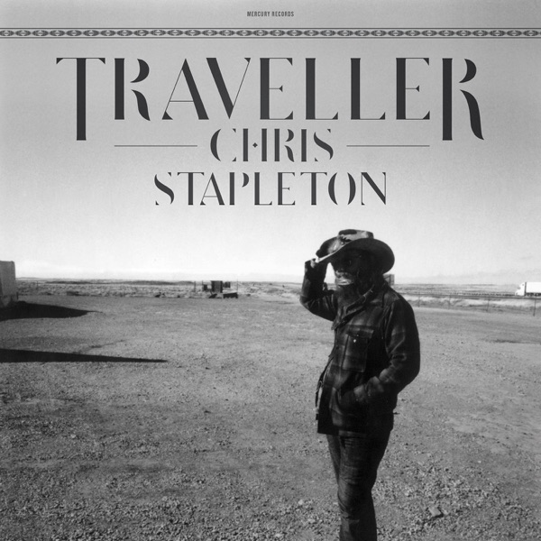

Traveller
Chris Stapleton
Upgrade idea: This original URP pressing is the definitive edition — no audiophile reissue has been produced. The original pressing sounds excellent; keep it.
Production notes
Tracklist (Discogs)
| A1 | Traveller | 3:42 |
| A2 | Fire Away | 4:04 |
| A3 | Tennessee Whiskey | 4:52 |
| A4 | Parachute | 4:13 |
| B1 | Whiskey And You | 3:56 |
| B2 | Nobody To Blame | 4:04 |
| B3 | More Of You | 4:37 |
| B4 | When The Stars Come Out | 4:16 |
| C1 | Daddy Doesn't Pray Anymore | 4:09 |
| C2 | Might As Well Get Stoned | 4:37 |
| C3 | Was It 26 | 4:49 |
| D1 | The Devil Named Music | 6:07 |
| D2 | Outlaw State Of Mind | 5:37 |
| D3 | Sometimes I Cry | 4:02 |
Tracklist (Apple Music)
| 1 | Traveller | 3:42 |
| 2 | Fire Away | 4:04 |
| 3 | Tennessee Whiskey | 4:53 |
| 4 | Parachute | 4:13 |
| 5 | Whiskey and You | 3:56 |
| 6 | Nobody to Blame | 4:04 |
| 7 | More of You | 4:37 |
| 8 | When the Stars Come Out | 4:16 |
| 9 | Daddy Doesn't Pray Anymore | 4:09 |
| 10 | Might As Well Get Stoned | 4:37 |
| 11 | Was It 26 | 4:49 |
| 12 | The Devil Named Music | 6:07 |
| 13 | Outlaw State of Mind | 5:37 |
| 14 | Sometimes I Cry | 4:00 |
Personnel & credits
- Dave Cobb — Acoustic Guitar, Percussion
- Morgane Stapleton — Backing Vocals
- J.T. Cure — Bass
- Mary Hooper — Design
- Derek Mixon — Drums, Percussion
- Mickey Raphael — Harmonica
- Chris Stapleton — Lead Vocals, Electric Guitar, Acoustic Guitar, Mandolin
- Pete Lyman — Mastered By
- Robby Turner — Pedal Steel Guitar
- Becky Fluke — Photography By
- Mike Webb (2) — Piano, Organ, Mellotron
- Chris Stapleton — Producer
- Dave Cobb — Producer
Identifiers
- Barcode: 6 02547 25522 8 (Text)
- Barcode: 602547255228 (Scanned)
- Matrix / Runout: B0019405-02 LP01 -A Ⓤ ϤR (Side A Etched)
- Matrix / Runout: B0019405-02 LP01 - B Ⓤ ϤR (Side B Etched)
- Matrix / Runout: B0019405-02 LP02 - C RE-2 ϤR Ⓤ (Side C Etched)
- Matrix / Runout: B0019405-02 LP02 - D RE-2 Ⓤ ϤR (Side D Etched)
- Matrix / Runout: B0019405-02 LP01 - A RE-5 ϤR (Side A Etched variant)
- Matrix / Runout: B0019405-02 LP01 - B RE-5 ϤR (Side B Etched variant)
- Matrix / Runout: B0019405-02 LP02 - C RE-5 ϤR (Side C Etched variant)
- Matrix / Runout: B0019405-02 LP02 - D RE-5 ϤR (Side D Etched variant)
Notes
Gatefold sleeve
Chris Stapleton’s explosive 2015 debut — raw, blues-soaked country produced by Dave Cobb, recorded live to tape at RCA Studio A Nashville. ‘Tennessee Whiskey’ made him a household name. Original pressing on Mercury Nashville (B0019405-01), pressed at United Record Pressing (Ⓤ), Nashville. Matrix B0019405-02 LP01 Ⓤ.